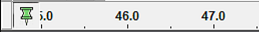
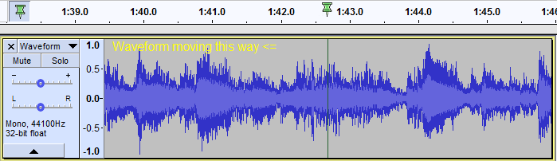

Playing and Recording
Controlling Playback and Recording
Transport Toolbar
The easiest way to control Audacity playback and recording is with Transport Toolbar:

 Clicking Play plays from the cursor point to the end of the project, or from the start of the selection region to the end of that region.
Clicking Play plays from the cursor point to the end of the project, or from the start of the selection region to the end of that region.
 The alternative Loop Play action for the Play button is activated by holding Shift while clicking Play. The button changes to display two circular green arrows to indicate Loop Play.
The alternative Loop Play action for the Play button is activated by holding Shift while clicking Play. The button changes to display two circular green arrows to indicate Loop Play.
 Play Cut Preview will play audio either side of a selection to preview what deleting the selection will sound like. Hold down Ctrl (⌘ on Mac) while clicking Play.
Play Cut Preview will play audio either side of a selection to preview what deleting the selection will sound like. Hold down Ctrl (⌘ on Mac) while clicking Play.
- Alternatively you can use the C shortcut to preview the cut. This also causes the Play button image to change to Play Cut Preview.
- Clicking Record or using the R shortcut always begins recording at the end of the currently selected track(s).
 The alternative Record New Track action for the Record button is activated by holding Shift while clicking Record. The button changes to display the Record New Track icon. This will start recording in a new track at either the current cursor position or at the beginning of the current selection.
The alternative Record New Track action for the Record button is activated by holding Shift while clicking Record. The button changes to display the Record New Track icon. This will start recording in a new track at either the current cursor position or at the beginning of the current selection.
 Click Pause, or its shortcut P, to temporarily pause playing or recording without losing your place. Click Pause a second time to resume.
Click Pause, or its shortcut P, to temporarily pause playing or recording without losing your place. Click Pause a second time to resume.
 Clicking Stop stops playing or recording immediately, and releases Pause if depressed. You must stop playback or recording before you can use the buttons in the Transport Toolbar.
Clicking Stop stops playing or recording immediately, and releases Pause if depressed. You must stop playback or recording before you can use the buttons in the Transport Toolbar.
Using keyboard shortcuts
When you get more used to Audacity, it's often easier to use keyboard shortcuts for repetitive actions like playing, pausing and recording. Below is a list of the equivalent keyboard shortcut for each of the Transport Toolbar buttons, with a description of what each button and its shortcut does.
Button Shortcut What it does Pause P Press once to pause playback or recording then once to resume. Play or Stop Space Press once to start playback then once to stop. Starting playback again starts from its original starting position at the cursor. Loop-Play Shift + Space Play the entire selection repeatedly (or the entire track if no selection) until stopped. Move to Next Label Alt + Right Places the editing cursor or selection to correspond with the next label and restarts playback from there, without opening the label for editing. After the final label is reached, using the shortcut again jumps playback to the first label. Not available while recording. Move to Previous Label Alt + Left Places the editing cursor or selection to correspond with the previous label and restarts playback from there, without opening the label for editing. After the first label is reached, using the shortcut again jumps playback to the final label. Not available while recording. Skip to Start Home Move the cursor to start of project. Skip to End End Move the cursor to end of project. Record R Record starting from the end of the selected track(s). Record New Track Shift + R Record in a new track starting from the cursor position or start of the selection.
There is an additional command which has the shortcut X. This acts exactly like Space when starting playback, but when used to stop, the cursor or start of the selection is set to the position where playback was stopped. Using either Space or X will then start playback from that stop position.
All the above shortcuts can be changed if desired in Keyboard Preferences.
Adjusting the Playback volume
You can adjust the playback volume using the output level slider in the Mixer Toolbar.
The Playback Meter will show you the overall volume of all of your tracks when mixed together.
Playing at slower or faster speeds than normal
Using the Play button in Transcription Toolbar plays at a constant speed but slower or faster than normal. Envelope Tool on the Tools Toolbar, when used in conjunction with a Time Track, allows a speed envelope to be drawn which can increase or decrease playback speed over the length of the audio.
Pinned head playing and recording
You can change Audacity to play or record with a fixed head pinned to the center of the Timeline. In this mode the head remains static and the waveform scrolls continuously as the audio is played or recorded.
This behavior is controlled by using the button at the left of the Timeline. By default this shows as a green downward-pointing triangle (like the play head). In this mode, the play or record head will move horizontally and the waveform will scroll when necessary, except that if Update display when Recording/Playback head is unpinned is unchecked in Tracks Preferences then scrolling will not occur.
Clicking the green triangle causes the button icon to change to a drawing-pin. This indicates that the play or record head is now pinned to the center of the Timeline and when playing or recording, the waveform will scroll continuously.
- 
When pinned playback or recording is chosen, the playhead displays as a green drawing-pin (as shown in the image below) and the recording head displays as a red drawing-pin.
- 
Clicking the drawing-pin reverts to default unpinned playback and recording, and the button will change back to the green triangle.
Unpinned or pinned head can also be selected in Tracks Preferences.
Playback
Quick-Play using the Timeline
Timeline Quick-Play provides a quick and convenient means to either start playback from any point within the current project or to playback a region of audio.
For details see the Quick-Play section on the Timeline page.
Scrubbing and Seeking
Scrubbing or Seeking is the action of moving the mouse pointer right or left so as to adjust the position, speed or direction of playback - a convenient way to quickly navigate the waveform to find a particular event of interest.
Scrubbing or Seeking in Audacity is initiated by using the Scrub button or Seek button in Scrub Toolbar . Alternatively you can use the menu item and select or from the cascading menu.
Audacity will remain in scrubbing/seeking mode until you return it to normal play mode. Clicking the Stop button  (or its shortcut Space) at any time will stop scrub/seek play and return you to normal play mode moving the cursor to the current scrub/seek play position. If you wish to stop scrubbing or seeking without losing the position of the editing cursor or selection, use the Escape Esc key.
(or its shortcut Space) at any time will stop scrub/seek play and return you to normal play mode moving the cursor to the current scrub/seek play position. If you wish to stop scrubbing or seeking without losing the position of the editing cursor or selection, use the Escape Esc key.
Please see Scrubbing and Seeking for details
MIDI (and Allegro) Playback
MIDI (and Allegro .gro) files can be imported into Audacity with to a Note Track.
Audacity can now play these MIDI (and Allegro) files, but note that there will no use of the Playback meter while Note tracks are played. Although Note track playback should just work on Windows, on Mac and Linux additional software may be required.
Editing these Note tracks is possible, but very limited.
For more details please see: Note Tracks.
Please see these pages in the Audacity Wiki:
Recording
When you click the Record button on Transport Toolbar, or use the R, Audacity will record at the end of the currently selected (or only) track, or create a new track if you have an empty project.
| When making recordings, particular critical recordings, you should consider shutting down all other applications giving Audacity sole use of the computer. This can help to avoid skips, small dropouts, and ticks in your recordings.
And on Mac that means fully Quitting them not just closing them, as otherwise Mac will leave them open consuming computer resources.
|
Overdubbing
You can record a new track while listening to previously recorded tracks. This is called overdubbing. To set up for overdubbing, make sure that is enabled (on) which is its default setting. See the tutorial set Recording Multi-track Overdubs for more help with overdubbing.
If you hold the button down the Record button in Transport Toolbar will temporarily change to  . Then clicking on this modified Record button, or using the shortcut Shift + R will cause Audacity to create a new track and begin recording on that track from the current cursor position (or from the left edge of a region on the Timeline).
. Then clicking on this modified Record button, or using the shortcut Shift + R will cause Audacity to create a new track and begin recording on that track from the current cursor position (or from the left edge of a region on the Timeline).
If there is a region in the Timeline, that region will be recorded in a new track. After stopping recording, Audacity will push the recorded track backwards by 130 milliseconds by default to attempt to align it with the previous tracks(s). Left-pointing arrows will appear at time zero when any of the recorded track is pushed behind zero (standard Export ignores audio before zero but Export Multiple based on multiple audio tracks includes it). It is recommended to perform a latency test to determine the optimum backwards correction then set that value at Latency correction in Recording Preferences.
Timer Recording
Yet another way to record is using the Timer Record utility, found in the Transport Menu.
Use it to start recording later, or to record for a certain duration before stopping.
Sound Activated Recording
If you turn on you can make recording pause until the input level exceeds the specified threshold level at .